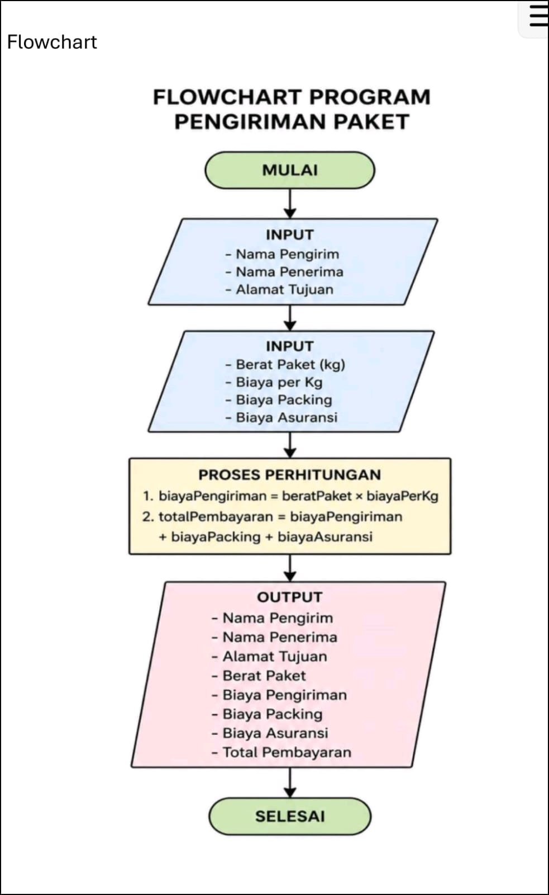

ALGORITMA PEMROGRAMAN
Website dokumentasi materi, tugas, dan hasil pembelajaran mata kuliah Algoritma Pemrograman.
Mulai Membaca
Website dokumentasi materi, tugas, dan hasil pembelajaran mata kuliah Algoritma Pemrograman.
Mulai MembacaWebsite ini merupakan dokumentasi pembelajaran Praktikum Algoritma Pemrograman yang berisi kumpulan materi, tugas, latihan, dan pembahasan yang telah dipelajari selama satu semester. Setiap pertemuan disusun secara sistematis untuk memudahkan proses pembelajaran serta menjadi sarana dokumentasi hasil praktikum yang telah dilaksanakan.
Seluruh materi, tugas, pembahasan, serta laporan praktikum disusun dalam bentuk website agar lebih mudah dipelajari kembali.
Algoritma merupakan salah satu konsep dasar yang sangat penting dalam dunia komputer dan pemrograman. Sebelum sebuah program dibuat, programmer harus terlebih dahulu menyusun langkah-langkah penyelesaian masalah yang disebut algoritma. Dengan adanya algoritma, proses pembuatan program menjadi lebih terarah dan sistematis sehingga tujuan yang diinginkan dapat tercapai dengan baik.
Dalam kehidupan sehari-hari, sebenarnya manusia sering menggunakan algoritma tanpa disadari. Misalnya saat membuat minuman, menggunakan mesin ATM, atau mengikuti petunjuk perjalanan menuju suatu tempat. Semua aktivitas tersebut dilakukan melalui urutan langkah yang teratur untuk mencapai hasil tertentu.
Secara umum, algoritma dapat diartikan sebagai serangkaian langkah-langkah logis dan sistematis yang digunakan untuk menyelesaikan suatu masalah. Langkah-langkah tersebut harus disusun secara berurutan agar menghasilkan solusi yang sesuai dengan tujuan yang ingin dicapai.
Dalam bidang komputer, algoritma berfungsi sebagai dasar dalam pembuatan program. Sebuah program yang baik biasanya diawali dengan algoritma yang jelas sehingga proses penulisan kode menjadi lebih mudah dan terstruktur. Oleh karena itu, pemahaman mengenai algoritma menjadi keterampilan yang wajib dimiliki oleh setiap programmer.
Algoritma memiliki peran penting karena membantu programmer memahami alur penyelesaian masalah sebelum program dibuat. Dengan algoritma yang baik, suatu permasalahan yang kompleks dapat dipecah menjadi beberapa langkah yang lebih sederhana dan mudah dipahami.
Selain itu, algoritma juga membantu meningkatkan efisiensi program. Program yang dibangun berdasarkan algoritma yang baik biasanya lebih mudah dikembangkan, lebih mudah diperbaiki ketika terjadi kesalahan, dan memiliki kinerja yang lebih optimal.
Algoritma dan program merupakan dua hal yang saling berkaitan. Algoritma adalah rancangan atau urutan langkah penyelesaian masalah, sedangkan program adalah implementasi algoritma ke dalam bahasa pemrograman yang dapat dijalankan oleh komputer. Dengan kata lain, algoritma merupakan dasar yang digunakan dalam proses pembuatan program.
Satu algoritma dapat diterapkan ke berbagai bahasa pemrograman seperti Python, Java, C++, maupun bahasa lainnya. Meskipun sintaks yang digunakan berbeda, logika penyelesaiannya tetap sama sesuai dengan algoritma yang telah dirancang sebelumnya.
Algoritma merupakan dasar utama dalam pemrograman yang berisi langkah-langkah logis dan sistematis untuk menyelesaikan suatu masalah. Pemahaman terhadap algoritma sangat penting karena membantu programmer menyusun solusi yang efektif sebelum diterapkan ke dalam bentuk program. Dengan menguasai konsep algoritma, mahasiswa akan lebih mudah mempelajari berbagai bahasa pemrograman dan mengembangkan perangkat lunak yang berkualitas.
Struktur dasar algoritma merupakan fondasi utama dalam penyusunan program komputer. Sebelum membuat sebuah program, programmer harus memahami bagaimana langkah-langkah penyelesaian masalah akan disusun secara logis dan sistematis. Dengan adanya struktur algoritma yang baik, proses pembuatan program menjadi lebih mudah dipahami, terarah, dan dapat menghasilkan solusi yang sesuai dengan kebutuhan pengguna.
Dalam dunia pemrograman, algoritma berfungsi sebagai pedoman yang menjelaskan urutan pekerjaan yang harus dilakukan oleh komputer. Setiap langkah yang dibuat harus memiliki tujuan yang jelas sehingga data yang diolah dapat menghasilkan informasi yang benar. Oleh karena itu, pemahaman mengenai struktur dasar algoritma menjadi langkah awal yang penting sebelum mempelajari bahasa pemrograman.
Notasi algoritmik adalah cara penulisan algoritma menggunakan bahasa yang mudah dipahami oleh manusia. Notasi ini digunakan untuk menggambarkan langkah-langkah penyelesaian masalah tanpa terikat pada aturan atau sintaks bahasa pemrograman tertentu.
Dengan menggunakan notasi algoritmik, programmer dapat lebih fokus pada logika penyelesaian masalah dibandingkan cara penulisan kode. Notasi algoritmik juga mempermudah komunikasi antar programmer karena dapat dipahami oleh siapa saja meskipun menggunakan bahasa pemrograman yang berbeda.
Tipe data merupakan jenis data yang digunakan untuk menyimpan suatu nilai dalam program. Setiap tipe data memiliki karakteristik yang berbeda dan digunakan sesuai kebutuhan pengolahan data.
Beberapa tipe data dasar yang sering digunakan adalah integer untuk bilangan bulat, float untuk bilangan desimal, character untuk satu karakter, string untuk kumpulan karakter atau teks, serta boolean yang hanya memiliki nilai benar (true) atau salah (false). Pemilihan tipe data yang tepat akan membantu program berjalan lebih efektif dan efisien.
Ekspresi merupakan gabungan antara variabel, konstanta, dan operator yang menghasilkan suatu nilai. Dalam pemrograman, ekspresi sering digunakan untuk melakukan perhitungan maupun pengambilan keputusan.
Contohnya adalah operasi matematika seperti penjumlahan, pengurangan, perkalian, dan pembagian. Hasil dari ekspresi tersebut nantinya dapat disimpan ke dalam variabel atau digunakan dalam proses lainnya.
Nilai atau value adalah data yang tersimpan dalam suatu variabel maupun konstanta. Nilai dapat berupa angka, huruf, teks, maupun nilai logika. Nilai inilah yang nantinya akan diproses oleh program untuk menghasilkan suatu informasi.
Sebagai contoh, pada variabel umur yang berisi angka 19, maka angka 19 tersebut merupakan nilai yang tersimpan di dalam variabel. Nilai menjadi komponen penting karena seluruh proses komputasi pada dasarnya merupakan proses pengolahan nilai.
Assignment adalah proses pemberian nilai ke dalam suatu variabel. Dalam pemrograman, assignment digunakan untuk menyimpan data yang nantinya dapat digunakan kembali selama program berjalan.
Sebagai contoh, variabel nama dapat diberikan nilai "Nadila", sedangkan variabel umur dapat diberikan nilai 19. Dengan adanya assignment, program dapat menyimpan dan mengelola data dengan lebih mudah.
Input adalah data yang dimasukkan ke dalam program untuk diproses. Data tersebut dapat berasal dari pengguna, file, sensor, maupun sumber lainnya. Setelah data diterima, program akan mengolahnya sesuai algoritma yang telah dibuat.
Output adalah hasil yang diperoleh setelah proses pengolahan selesai dilakukan. Output dapat berupa teks, angka, laporan, maupun informasi lainnya yang ditampilkan kepada pengguna. Hubungan antara input dan output sangat penting karena kualitas output sangat bergantung pada data input yang diberikan.
Struktur dasar algoritma merupakan dasar penting dalam pemrograman yang membantu programmer menyusun solusi secara sistematis dan logis. Beberapa konsep yang dipelajari meliputi notasi algoritmik, tipe data dasar, ekspresi, nilai, assignment, serta input dan output. Dengan memahami konsep-konsep tersebut, mahasiswa akan lebih mudah mempelajari pemrograman dan mengembangkan program yang efektif serta mudah dipahami.
Algoritma merupakan serangkaian langkah yang disusun secara logis dan sistematis untuk menyelesaikan suatu masalah. Dalam dunia pemrograman, algoritma memiliki peran yang sangat penting karena menjadi dasar dalam pembuatan program. Sebelum menuliskan kode program, seorang programmer harus memahami terlebih dahulu langkah-langkah penyelesaian masalah agar program yang dibuat dapat berjalan sesuai tujuan.
Struktur algoritma digunakan untuk mengatur urutan instruksi yang akan dijalankan oleh komputer. Dengan adanya struktur yang jelas, proses pengolahan data menjadi lebih mudah dipahami dan meminimalkan terjadinya kesalahan dalam pembuatan program.
Secara umum, algoritma memiliki tiga struktur dasar yang sering digunakan, yaitu struktur sekuensial, pemilihan (selection), dan perulangan (looping). Ketiga struktur ini menjadi fondasi utama dalam hampir seluruh bahasa pemrograman modern.
Struktur sekuensial adalah struktur yang menjalankan instruksi secara berurutan dari atas ke bawah. Setiap langkah akan dikerjakan satu per satu sesuai urutan yang telah ditentukan.
Struktur pemilihan digunakan ketika program harus menentukan keputusan berdasarkan suatu kondisi tertentu. Struktur ini memungkinkan program memilih tindakan yang berbeda sesuai kondisi yang terjadi.
Sedangkan struktur perulangan digunakan untuk menjalankan instruksi yang sama secara berulang tanpa harus menuliskan kode yang sama berkali-kali. Struktur ini sangat membantu dalam meningkatkan efisiensi program.
Agar dapat digunakan dengan baik, sebuah algoritma harus memiliki beberapa karakteristik penting. Karakteristik pertama adalah memiliki input, yaitu data yang akan diproses untuk menghasilkan suatu informasi.
Karakteristik kedua adalah menghasilkan output. Setelah data diproses, algoritma harus memberikan hasil yang sesuai dengan tujuan penyelesaian masalah.
Selain itu, algoritma juga harus memiliki langkah-langkah yang jelas dan tidak menimbulkan penafsiran ganda. Setiap instruksi harus mudah dipahami sehingga dapat diterapkan dengan benar ke dalam program.
Karakteristik lainnya adalah memiliki akhir yang jelas atau finite. Artinya, algoritma harus berhenti setelah semua proses selesai dilakukan dan tidak berjalan tanpa batas.
Penggunaan algoritma memberikan banyak manfaat dalam proses pengembangan perangkat lunak. Dengan algoritma yang baik, programmer dapat menyelesaikan masalah secara lebih terstruktur dan efisien.
Selain itu, algoritma juga membantu dalam proses perawatan program. Ketika terjadi kesalahan atau diperlukan pengembangan fitur baru, program yang dibuat berdasarkan algoritma yang jelas akan lebih mudah dipahami dan diperbaiki.
Struktur dan karakteristik algoritma merupakan bagian penting dalam pemrograman. Dengan memahami struktur dasar algoritma serta karakteristik yang dimilikinya, mahasiswa dapat menyusun solusi yang lebih sistematis dan menghasilkan program yang lebih efektif. Oleh karena itu, pemahaman terhadap konsep algoritma menjadi dasar yang sangat penting sebelum mempelajari materi pemrograman yang lebih kompleks.
Pada pertemuan ini mahasiswa diberikan beberapa pertanyaan yang bertujuan untuk menguji pemahaman mengenai konsep dasar algoritma, program, struktur algoritma, serta fungsi bahasa pemrograman. Pembahasan berikut disusun berdasarkan materi yang telah dipelajari pada pertemuan sebelumnya.
📄 Lihat PDF TugasBerikan contoh algoritma dalam kehidupan sehari-hari berdasarkan studi kasus yang diberikan.
Algoritma digunakan untuk menjelaskan urutan langkah yang harus dilakukan agar proses penarikan uang dapat berjalan dengan benar.
Pembuatan kopi juga dapat digambarkan menggunakan algoritma karena dilakukan melalui langkah-langkah yang berurutan.
Algoritma digunakan untuk menyelesaikan perhitungan matematika secara sistematis.
Apa yang dimaksud dengan algoritma dan program?
Algoritma adalah langkah-langkah atau urutan cara yang digunakan untuk menyelesaikan suatu masalah secara logis dan sistematis. Sedangkan program adalah kumpulan instruksi yang ditulis menggunakan bahasa pemrograman untuk menjalankan algoritma pada komputer.
Suatu algoritma terdiri dari tiga struktur dasar. Jelaskan masing-masing.
Tiga struktur dasar algoritma terdiri dari:
Uraikan fungsi dari bahasa pemrograman Java yang Anda ketahui.
Bahasa pemrograman Java memiliki berbagai fungsi dalam pengembangan perangkat lunak, antara lain:
Melalui latihan ini, mahasiswa dapat memahami bahwa algoritma tidak hanya digunakan dalam pemrograman, tetapi juga dapat diterapkan dalam berbagai aktivitas sehari-hari. Selain itu, pemahaman mengenai struktur algoritma dan fungsi bahasa pemrograman menjadi dasar penting dalam pengembangan perangkat lunak yang efektif dan terstruktur.
Pada pertemuan ini mahasiswa mempelajari konsep tipe data, variabel, array, serta operator dalam bahasa pemrograman Java. Materi ini sangat penting karena menjadi dasar dalam penyimpanan dan pengolahan data pada sebuah program.
📄 Lihat PDF TugasJelaskan perbedaan tipe data primitif dan non-primitif!
Tipe data primitif adalah tipe data dasar yang langsung menyimpan nilai. Tipe data ini sederhana, tidak memiliki method, dan ukuran memorinya sudah ditentukan.
Contoh tipe data primitif:
Tipe data non-primitif adalah tipe data yang lebih kompleks dan biasanya berbentuk objek. Tipe data ini dapat memiliki method atau fungsi, mampu menyimpan banyak nilai, serta lebih fleksibel digunakan dalam pemrograman.
Contoh tipe data non-primitif:
Perhatikan penulisan variabel berikut. Uraikan kesalahan yang terdapat pada penulisan tersebut.
Int 5angka; String nama siswa; Int static;
Berikan contoh cara mendeklarasikan tipe data array!
Array digunakan untuk menyimpan banyak data dengan tipe yang sama dalam satu variabel.
int[] angka = {1,2,3,4,5};
Atau:
int angka[] = new int[5];
Sebutkan dan uraikan operator aritmatika dalam bahasa Java!
Operator aritmatika digunakan untuk melakukan operasi matematika dalam program.
Contoh penggunaan:
int a = 10; int b = 3; int hasil = a + b;
Output yang dihasilkan adalah 13.
Berikan contoh implementasi operator pembagian menggunakan bahasa Java!
int a = 10; int b = 2; int hasil = a / b; System.out.println(hasil);
Output:
5
Jika ingin menghasilkan bilangan desimal:
double hasil = 10.0 / 3; System.out.println(hasil);
Output:
3.333333
Melalui post test ini, mahasiswa dapat memahami perbedaan tipe data primitif dan non-primitif, aturan penulisan variabel yang benar, cara mendeklarasikan array, serta penggunaan operator aritmatika dalam bahasa Java. Pemahaman materi ini menjadi dasar penting dalam proses pembuatan program yang terstruktur dan efisien.
Dalam pemrograman, sebuah masalah sering kali tidak dapat diselesaikan hanya dengan satu struktur algoritma saja. Oleh karena itu, diperlukan kombinasi beberapa struktur algoritma agar program dapat bekerja sesuai kebutuhan. Struktur yang umum digunakan adalah struktur sekuensial, pemilihan (selection), dan perulangan (looping).
Kombinasi struktur algoritma merupakan penggunaan dua atau lebih struktur dasar algoritma dalam satu penyelesaian masalah. Dengan menggabungkan beberapa struktur tersebut, program dapat menangani proses yang lebih kompleks dan menghasilkan solusi yang lebih efektif.
Pada kombinasi ini, program menjalankan beberapa instruksi secara berurutan terlebih dahulu, kemudian melakukan pengecekan kondisi untuk menentukan langkah berikutnya.
Contohnya adalah proses login pada sebuah aplikasi. Pengguna memasukkan username dan password, kemudian sistem memeriksa apakah data yang dimasukkan benar atau salah. Jika benar, pengguna dapat masuk ke sistem. Jika salah, sistem akan menampilkan pesan kesalahan.
Kombinasi ini digunakan ketika program harus menjalankan beberapa langkah secara berurutan dan mengulang proses tertentu beberapa kali.
Contohnya adalah menghitung jumlah nilai beberapa siswa. Program akan meminta data nilai secara berulang hingga semua nilai selesai dimasukkan, kemudian menghitung total dan rata-ratanya.
Struktur pemilihan juga dapat digabungkan dengan perulangan. Pada kombinasi ini, setiap perulangan dapat disertai pengecekan kondisi tertentu sebelum melanjutkan proses berikutnya.
Sebagai contoh, sebuah program akan terus meminta pengguna memasukkan password sampai password yang dimasukkan benar. Selama kondisi belum terpenuhi, proses akan terus diulang.
Kombinasi struktur algoritma merupakan penerapan beberapa struktur dasar algoritma secara bersamaan dalam satu program. Dengan menggabungkan struktur sekuensial, pemilihan, dan perulangan, programmer dapat menyelesaikan berbagai permasalahan dengan lebih efektif dan menghasilkan program yang lebih terstruktur.
Pada pertemuan ini mahasiswa diberikan beberapa pertanyaan mengenai instruksi dalam algoritma dan struktur algoritma sekuensial. Materi ini penting karena struktur sekuensial merupakan bentuk algoritma paling dasar yang digunakan dalam pemrograman.
📄 Lihat PDF TugasApa yang Anda ketahui tentang instruksi pada algoritma?
Instruksi pada algoritma adalah perintah atau langkah yang harus dilakukan untuk menyelesaikan suatu masalah. Instruksi disusun secara logis dan berurutan agar menghasilkan output yang sesuai dengan tujuan yang diinginkan.
Apa yang dimaksud dengan struktur algoritma sekuensial?
Struktur algoritma sekuensial adalah struktur algoritma yang menjalankan instruksi secara berurutan dari awal hingga akhir. Setiap langkah akan dikerjakan satu per satu sesuai urutan yang telah ditentukan tanpa adanya percabangan maupun perulangan.
Bagaimana karakteristik dari struktur sekuensial?
Karakteristik struktur sekuensial antara lain:
1. Instruksi dijalankan secara berurutan.
2. Setiap langkah hanya dikerjakan satu kali.
3. Tidak memiliki percabangan kondisi.
4. Tidak terdapat proses perulangan.
5. Mudah dipahami dan diterapkan pada program sederhana.
Berikan contoh sederhana penggunaan struktur sekuensial!
Contoh sederhana penggunaan struktur sekuensial adalah menghitung luas persegi panjang.
1. Masukkan nilai panjang.
2. Masukkan nilai lebar.
3. Hitung luas = panjang × lebar.
4. Tampilkan hasil luas.
Langkah-langkah tersebut dilakukan secara berurutan dari awal hingga akhir sehingga termasuk dalam struktur algoritma sekuensial.
Struktur algoritma sekuensial merupakan struktur dasar yang paling sederhana dalam pemrograman. Semua instruksi dijalankan secara berurutan sehingga mudah dipahami dan digunakan untuk menyelesaikan berbagai permasalahan sederhana.
Struktur sekuensial merupakan struktur algoritma yang paling sederhana. Pada struktur ini, setiap instruksi dijalankan secara berurutan dari awal hingga akhir tanpa adanya percabangan maupun perulangan. Seluruh langkah akan diproses sesuai urutan yang telah ditentukan sehingga alur program menjadi lebih mudah dipahami dan dianalisis.
Struktur sekuensial banyak digunakan dalam program sederhana seperti menghitung luas bangun datar, menghitung nilai rata-rata, dan berbagai proses perhitungan lainnya yang tidak memerlukan pengambilan keputusan maupun pengulangan.

Flowchart di atas menunjukkan alur penyelesaian masalah menggunakan struktur algoritma sekuensial. Setiap langkah dilakukan secara berurutan mulai dari proses awal hingga proses akhir.
Simbol oval (Terminator) digunakan untuk menunjukkan awal (Start) dan akhir (End) suatu algoritma.
Simbol persegi panjang (Process) digunakan untuk menunjukkan proses pengolahan data atau perhitungan yang dilakukan oleh program.
Simbol jajar genjang (Input/Output) digunakan untuk menerima data masukan maupun menampilkan hasil kepada pengguna.
Garis panah (Flow Line) digunakan untuk menunjukkan arah jalannya proses dari satu langkah ke langkah berikutnya.
Pseudocode adalah cara penulisan algoritma menggunakan bahasa sederhana yang mudah dipahami manusia. Pseudocode digunakan untuk menggambarkan logika program sebelum diterjemahkan ke dalam bahasa pemrograman tertentu.
Dengan menggunakan pseudocode, programmer dapat merancang solusi suatu masalah secara sistematis tanpa harus memikirkan aturan sintaks bahasa pemrograman terlebih dahulu.
Mulai Input Data Proses Data Tampilkan Hasil Selesai
Flowchart, pseudocode, dan program merupakan bagian yang saling berkaitan dalam pengembangan perangkat lunak. Flowchart digunakan untuk menggambarkan alur proses secara visual, pseudocode digunakan untuk menjelaskan langkah-langkah algoritma dalam bentuk tulisan, sedangkan program merupakan implementasi algoritma menggunakan bahasa pemrograman tertentu.
Ketiga komponen tersebut membantu programmer dalam merancang dan mengembangkan solusi yang terstruktur sehingga proses pembuatan program menjadi lebih mudah dan efisien.
Berikut merupakan hasil tugas yang telah dikerjakan pada pertemuan 10.
📄 Lihat PDF Tugas Pertemuan 10Struktur algoritma sekuensial merupakan dasar dari berbagai algoritma dalam pemrograman. Dengan memahami flowchart, pseudocode, dan implementasi program, mahasiswa dapat merancang solusi yang lebih terstruktur dan mudah dipahami sebelum membuat program yang sebenarnya.
Perulangan (looping) merupakan salah satu struktur dasar dalam algoritma yang digunakan untuk menjalankan suatu instruksi secara berulang-ulang sesuai kondisi tertentu. Dengan menggunakan perulangan, programmer tidak perlu menuliskan instruksi yang sama berkali-kali sehingga program menjadi lebih singkat, efisien, dan mudah dipelajari.
Struktur perulangan sering digunakan dalam berbagai aplikasi, seperti menampilkan data secara berulang, menghitung jumlah nilai, membuat tabel perkalian, dan berbagai proses lain yang membutuhkan pengulangan instruksi.
Perulangan for digunakan ketika jumlah pengulangan sudah diketahui sejak awal. Struktur ini terdiri dari nilai awal, kondisi, dan perubahan nilai yang akan dieksekusi secara otomatis selama kondisi masih terpenuhi.
Perulangan for biasanya digunakan untuk menampilkan angka berurutan, melakukan perhitungan berulang, maupun mengakses data dalam jumlah tertentu.
Perulangan while digunakan ketika jumlah pengulangan belum diketahui secara pasti. Perulangan akan terus berjalan selama kondisi yang diberikan bernilai benar (true).
Struktur while sangat cocok digunakan pada program yang membutuhkan pengecekan kondisi secara terus-menerus sebelum proses berikutnya dijalankan.
Perulangan do while hampir sama dengan while, namun memiliki perbedaan pada proses pengecekan kondisi. Pada do while, instruksi akan dijalankan terlebih dahulu kemudian kondisi diperiksa.
Karena proses dijalankan lebih dahulu, maka perulangan do while pasti akan dieksekusi minimal satu kali meskipun kondisi akhirnya bernilai salah.
Nested Loop atau perulangan bersarang adalah perulangan yang berada di dalam perulangan lainnya. Struktur ini digunakan ketika suatu proses memerlukan pengulangan bertingkat.
Contoh penggunaan nested loop dapat ditemukan pada pembuatan pola bintang, tabel perkalian, serta berbagai proses pengolahan data dua dimensi.
1. Mengurangi penulisan kode yang berulang.
2. Membuat program lebih efisien.
3. Mempermudah pengolahan data dalam jumlah banyak.
4. Membantu menyelesaikan masalah yang membutuhkan proses berulang.
5. Membuat algoritma lebih terstruktur dan mudah dipahami.
Pada pertemuan ini mahasiswa diminta membuat program yang menggunakan struktur perulangan For, While, Do While, dan Nested Loop. Hasil pengerjaan tugas telah dilampirkan dalam bentuk PDF berikut.
📄 Lihat PDF Tugas Pertemuan 11Struktur perulangan merupakan komponen penting dalam pemrograman karena memungkinkan suatu instruksi dijalankan berkali-kali secara otomatis. Dengan memahami penggunaan For, While, Do While, dan Nested Loop, mahasiswa dapat membuat program yang lebih efektif, efisien, dan mudah dikembangkan.
Pada pertemuan ini dilakukan penguatan materi yang telah dipelajari pada pertemuan sebelumnya. Tujuan kegiatan ini adalah untuk membantu mahasiswa memahami kembali konsep-konsep dasar algoritma dan pemrograman sebelum melanjutkan ke materi yang lebih kompleks.
Selama perkuliahan, mahasiswa telah mempelajari berbagai konsep dasar seperti pengertian algoritma, struktur algoritma, tipe data, variabel, operator, array, flowchart, pseudocode, serta struktur perulangan. Seluruh materi tersebut saling berkaitan dan menjadi fondasi dalam pengembangan program komputer.
Algoritma merupakan urutan langkah-langkah logis dan sistematis yang digunakan untuk menyelesaikan suatu masalah. Algoritma menjadi dasar dalam pembuatan program karena sebelum menulis kode, programmer harus terlebih dahulu merancang solusi terhadap masalah yang akan diselesaikan.
Algoritma yang baik harus memiliki langkah yang jelas, mudah dipahami, memiliki input dan output, serta menghasilkan solusi yang tepat sesuai tujuan yang diinginkan.
Terdapat tiga struktur dasar algoritma yang menjadi fondasi dalam pemrograman, yaitu struktur sekuensial, pemilihan, dan perulangan.
Struktur sekuensial menjalankan instruksi secara berurutan dari awal hingga akhir. Struktur pemilihan digunakan untuk menentukan keputusan berdasarkan kondisi tertentu. Sedangkan struktur perulangan digunakan untuk menjalankan suatu instruksi secara berulang hingga kondisi tertentu terpenuhi.
Flowchart digunakan untuk menggambarkan alur algoritma dalam bentuk diagram sehingga lebih mudah dipahami secara visual. Sementara itu, pseudocode digunakan untuk menjelaskan langkah-langkah algoritma dalam bentuk tulisan sederhana yang tidak terikat dengan bahasa pemrograman tertentu.
Kedua alat bantu tersebut sangat penting dalam proses perancangan program karena membantu programmer memahami logika penyelesaian masalah sebelum menulis kode program.
Tipe data digunakan untuk menentukan jenis data yang akan disimpan dalam program, sedangkan variabel digunakan sebagai tempat penyimpanan data tersebut. Pemahaman terhadap tipe data dan variabel sangat penting karena hampir seluruh program menggunakan kedua konsep ini dalam pengolahan data.
Perulangan digunakan untuk menjalankan instruksi secara berulang tanpa harus menuliskan kode yang sama berkali-kali. Beberapa bentuk perulangan yang telah dipelajari meliputi For, While, Do While, dan Nested Loop.
Penggunaan perulangan membuat program menjadi lebih efisien dan mudah dikembangkan, terutama ketika harus memproses data dalam jumlah yang banyak.
Melalui kegiatan review dan penguatan materi ini, mahasiswa diharapkan mampu memahami kembali seluruh konsep dasar algoritma pemrograman yang telah dipelajari. Penguasaan konsep-konsep dasar tersebut menjadi bekal penting dalam menyelesaikan berbagai permasalahan pemrograman dan mengembangkan program yang lebih kompleks di masa mendatang.
Pada pertemuan ini mahasiswa mempelajari konsep array sebagai salah satu struktur data yang sangat penting dalam pemrograman. Array digunakan untuk menyimpan banyak data dalam satu variabel sehingga proses pengolahan data menjadi lebih mudah, terstruktur, dan efisien.
📄 Lihat PDF TugasApa yang dimaksud dengan array?
Array adalah struktur data yang digunakan untuk menyimpan sekumpulan data dengan tipe yang sama dalam satu variabel. Setiap elemen pada array memiliki indeks yang digunakan untuk mengakses data tersebut sehingga pengelolaan data menjadi lebih terorganisir dan efisien.
Jelaskan yang dimaksud dengan array satu dimensi!
Array satu dimensi adalah array yang hanya memiliki satu baris atau satu deretan elemen. Setiap elemen diakses menggunakan satu indeks sehingga bentuknya menyerupai daftar data yang tersusun secara linear.
Contoh:
nilai = [80, 85, 90, 95]
Pada contoh tersebut, angka 80 berada pada indeks ke-0, angka 85 berada pada indeks ke-1, dan seterusnya.
Bagaimana cara mendeklarasikan array?
Array dideklarasikan dengan menentukan nama array dan mengisi elemen-elemennya. Dalam Python, array sederhana biasanya direpresentasikan menggunakan list.
Contoh:
buah = ["Apel", "Mangga", "Jeruk", "Pisang"]
Selain menggunakan list, array juga dapat dibuat menggunakan modul array.
from array import array
angka = array('i', [1, 2, 3, 4, 5])
Tipe data apa yang digunakan untuk mendeklarasikan array?
Data yang disimpan dalam array umumnya memiliki tipe yang sama atau homogen. Beberapa tipe data yang sering digunakan antara lain:
1. Integer (bilangan bulat)
2. Float (bilangan desimal)
3. Character (karakter)
4. String (teks)
5. Boolean (True atau False)
Contoh:
umur = [18, 19, 20, 21] nilai = [85.5, 90.0, 88.5]
Sebutkan macam-macam array yang kamu ketahui!
Berdasarkan jumlah dimensinya, array dibedakan menjadi beberapa jenis:
1. Array Satu Dimensi (1D)
Memiliki satu indeks dan biasanya digunakan untuk menyimpan data dalam bentuk daftar atau urutan.
2. Array Dua Dimensi (2D)
Memiliki baris dan kolom sehingga sering digunakan untuk menyimpan data berbentuk tabel atau matriks.
3. Array Tiga Dimensi (3D)
Memiliki lapisan, baris, dan kolom sehingga dapat digunakan untuk menyimpan data yang lebih kompleks.
4. Array Multidimensi
Merupakan array yang memiliki lebih dari dua dimensi dan biasanya digunakan dalam simulasi, komputasi ilmiah, maupun pengolahan data tingkat lanjut.
Array merupakan struktur data yang berfungsi untuk menyimpan banyak data dalam satu variabel sehingga pengelolaan data menjadi lebih efektif dan terorganisir. Setiap elemen dalam array dapat diakses menggunakan indeks tertentu. Selain array satu dimensi, terdapat pula array dua dimensi, tiga dimensi, dan multidimensi yang digunakan sesuai kebutuhan program. Pemahaman mengenai array sangat penting karena konsep ini sering digunakan dalam berbagai bahasa pemrograman dan pengembangan perangkat lunak.